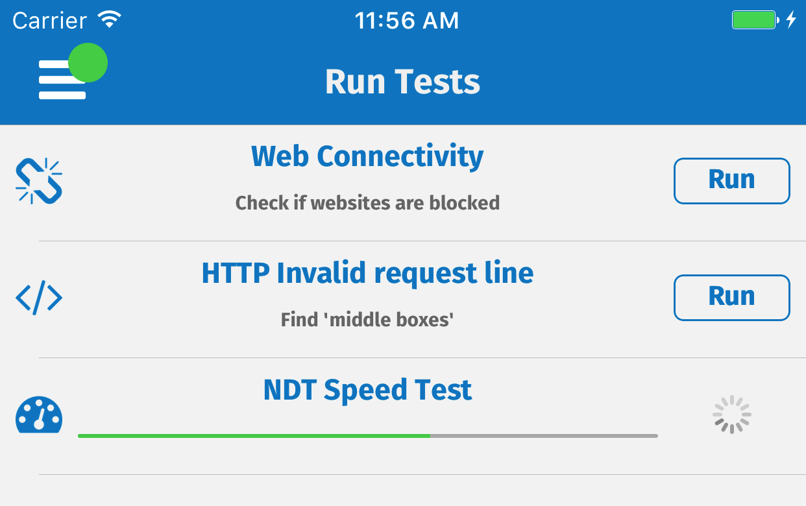
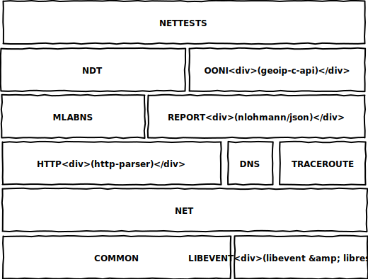

About
MeasurementKit is a C++11 library that implements open network measurement methodologies (performance, censorship, etc.) on Unix-like operating systems such as Android, iOS, Linux, and macOS. It is meant to be embedded by third party applications with specific network measurement needs and/or to be used by researchers to implement novel network measurement tools. It started as a common engine to implement the mobile versions of OONI and Neubot, and since then has grown to include also the implementation of Portolan traceroute and NDT tests. Future plans include adding support for Windows operating systems and for the uTP transport protocol.
Users
MeasurementKit is currently used to implement the mobile version of OONI for Android and iOS. Our implementation of the NDT network performance test is also integrated by a startup into its products.

The interface of ooniprobe-ios
Architecture
MeasurementKit has a layered architecture. The top level abstraction layer, called nettests contains code to instruct the library to run network tests. For example, the following C++11 code runs NDT:
#include <measurement_kit/nettests.hpp>
#include <iostream>
int main() {
mk::nettests::NdtTest()
.set_verbosity(MK_LOG_INFO)
.set_options("no_file_report", "1")
.set_options("save_real_probe_ip", "1")
.set_options("save_real_probe_asn", "0")
.set_options("save_real_probe_cc", "0")
.set_options("dns/engine", "system")
.run();
}
More complex examples are available in the source tree. Below nettests, there are modules implementing specific testing methodologies, such as ndt, which implements the NDT test, ooni, which implements OONI tests. Underneath, there are utility modules such as mlabns, which implements the protocol to talk with Measurement Lab name server, and report, which is used by nettests to store results locally and save them remotely.
Below them, there is HTTP code, in the http module, DNS code, in the dns module, and traceroute code in the traceroute module. They are based on the net module that in turn depends on the common and libevent modules that define, respectively, common code and code used to talk with the libevent engine. In addition to libevent, other dependencies are: http-parser, libressl (or alternatively OpenSSL), GeoIP.
The following diagram summarizes the architecture:

The architecture
of MeasurementKit
Our cross build system allows us to cross compile dependencies for iOS and Android. For macOS and Linux, we assume that the user has installed the required dependencies. See the project README for more info.
Implementation
The nettests module exports an internal domain specific language that allows you to describe what test you want to run and with which options. Internally, we seldomly use raw pointers and prefer instead using C++11 smart pointers. We specifically implemented a shared smart pointer, called Var and based on the C++ standard library shared_ptr, that checks whether the underlying pointer is nullptr and, in that case, raises an exception. We use lambda functions quite often and provide functional interfaces whenever there is no need to have explicit state, so to simplify interacting with the code. We use function templates using low level API functions as parameters, which allows us to override their behavior in the unit tests. We aim to keep our code coverage high (currently it is over 90%).
Sources
All our code is inside the measurement-kit GitHub organization. The main repository, also called measurement-kit, contains the C++11 library, the measurement_kit executable, documentation and examples. Other important repositories are: android-libs, which contains code specific to Android, android-example, which contains an example Android app, and ios-example, which contains an example iOS app.
We use two integration branches. The stable branch is meant to contain stable code to be used in production. The master branch is also stable but the code it contains breaks the compatibility with previous releases.
Documentation
We keep documentation in the measurement-kit repository. We try to keep the documentation up to date with the code. In general, however, the stable branch contains documentation more in-sync with the corresponding code, because such branch is closer to releases.